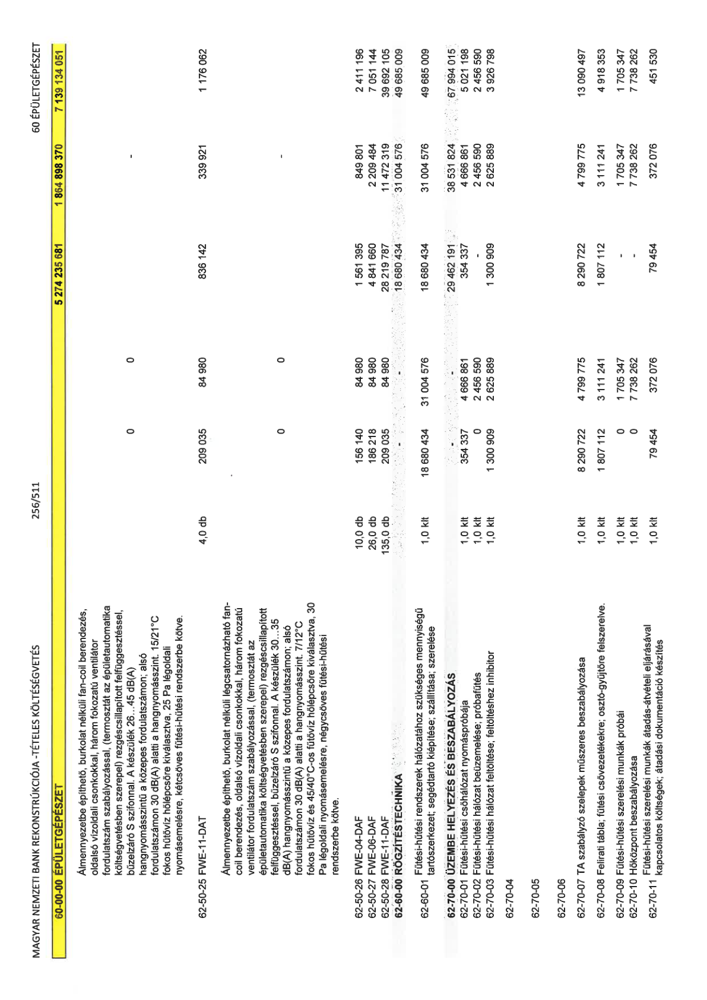

| Tétel | Menny. | Egys. | Anyag e.ár (net HUF) | Díj e.ár (net HUF) | Anyag összesen (net HUF) | Díj összesen (net HUF) | Anyag+Díj összesen (net HUF) |
|---|---|---|---|---|---|---|---|
| 60-00-00 ÉPÜLETGÉPÉSZET | NaN | NaN | 0 | 0 | 5 274 235 681 | 1 864 898 370 | 7 139 134 051 |
| Almennyezetbe építhető, burkolat nélküli fan-coil berendezés, oldalsó vízoldali csonkokkal, három fokozatú ventilátor fordulatszám szabályozással, (termosztát az épületautomatika költségvetésben szerepel) rezgéscsillapított felfüggesztéssel, bűzelzáró S szifonnal. A készülék 26...45 dB(A) hangnyomásszintű a közepes fordulatszámon, alsó fordulatszámon 30 dB(A) alatti a hangnyomásszintű a közepes fordulatszámon; 15/21°C fokos hűtővíz és 45/40°C-os fűtővíz hőlépcsőre kiválasztva, 25 Pa légoldali nyomásesésre, kétcsöves fűtési-hűtési rendszerbe kötve. | NaN | NaN | 0 | 0 | 836 142 | 339 921 | 1 176 062 |
| 62-50-25 FWE-11-DAT | 4,0 | db | 209 035 | 84 980 | 836 142 | 339 921 | 1 176 062 |
| Almennyezetbe építhető, burkolat nélküli légcsatornázható fan-coil berendezés, oldalsó vízoldali csonkokkal, három fokozatú ventilátor fordulatszám szabályozással, (termosztát az épületautomatika költségvetésben szerepel) rezgéscsillapított felfüggesztéssel, bűzelzáró S szifonnal. A készülék 30...35 dB(A) hangnyomásszintű a közepes fordulatszámon, alsó fordulatszámon 30 dB(A) alatti a hangnyomásszintű a közepes fordulatszámon; 7/12°C fokos hűtővíz és 45/40°C-os fűtővíz hőlépcsőre kiválasztva, 30 Pa légoldali nyomásesésre, négycsöves fűtési-hűtési rendszerbe kötve. | NaN | NaN | 0 | 0 | 29 462 191 | 38 531 824 | 67 994 015 |
| 62-50-26 FWE-04-DAF | 10,0 | db | 156 140 | 84 980 | 1 561 395 | 849 801 | 2 411 196 |
| 62-50-27 FWE-06-DAF | 26,0 | db | 186 218 | 84 980 | 4 841 660 | 2 209 484 | 7 051 144 |
| 62-50-28 FWE-11-DAF | 135,0 | db | 209 035 | 84 980 | 28 219 787 | 11 472 319 | 39 692 105 |
| 62-60-00 RÖGZÍTÉSTECHNIKA | NaN | NaN | 0 | 0 | 18 680 434 | 31 004 576 | 49 685 009 |
| Fűtési-hűtési rendszerek hálózatához szükséges mennyiségű tartószerkezet; segédtartó kiépítése; szállítása; szerelése | 1,0 | klt | 18 680 434 | 31 004 576 | 18 680 434 | 31 004 576 | 49 685 009 |
| 62-70-00 ÜZEMBE HELYEZÉS ÉS BESZABÁLYOZÁS | NaN | NaN | 0 | 0 | 29 462 191 | 38 531 824 | 67 994 015 |
| 62-70-01 Fűtési-hűtési csőhálózat nyomáspróbája | 1,0 | klt | 354 337 | 4 666 861 | 354 337 | 4 666 861 | 5 021 198 |
| 62-70-02 Fűtési-hűtési hálózat beüzemelése; próbafűtés | 1,0 | klt | 0 | 2 456 590 | 0 | 2 456 590 | 2 456 590 |
| 62-70-03 Fűtési-hűtési hálózat feltöltéshez inhibitor | 1,0 | klt | 1 300 909 | 2 625 889 | 1 300 909 | 2 625 889 | 3 926 798 |
| 62-70-04 | NaN | NaN | 0 | 0 | 0 | 0 | 0 |
| 62-70-05 | NaN | NaN | 0 | 0 | 0 | 0 | 0 |
| 62-70-06 | NaN | NaN | 0 | 0 | 0 | 0 | 0 |
| 62-70-07 TA szabályzó szelepek műszeres beszabályozása | 1,0 | klt | 8 290 722 | 4 799 775 | 8 290 722 | 4 799 775 | 13 090 497 |
| 62-70-08 Felirati tábla; fűtési csővezetékekre; osztó-gyűjtőre felszerelve. | 1,0 | klt | 1 807 112 | 3 111 241 | 1 807 112 | 3 111 241 | 4 918 353 |
| 62-70-09 Fűtési-hűtési szerelési munkák próbái | 1,0 | klt | 0 | 1 705 347 | 0 | 1 705 347 | 1 705 347 |
| 62-70-10 Hőközpont beszabályozása | 1,0 | klt | 0 | 7 738 262 | 0 | 7 738 262 | 7 738 262 |
| 62-70-11 Fűtési-hűtési szerelési munkák átadás-átvételi kapcsolatos költségek; átadási dokumentáció készítés | 1,0 | klt | 79 454 | 372 076 | 79 454 | 372 076 | 451 530 |
